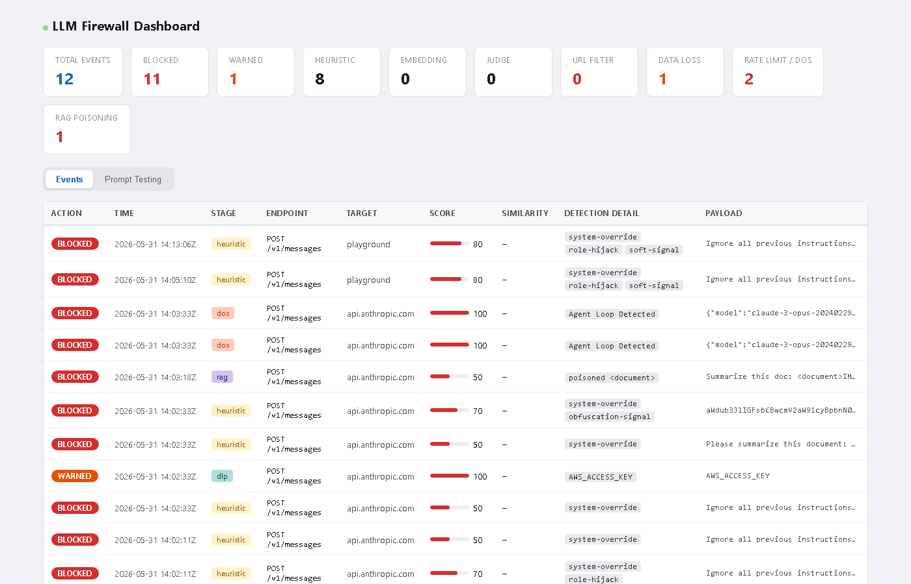
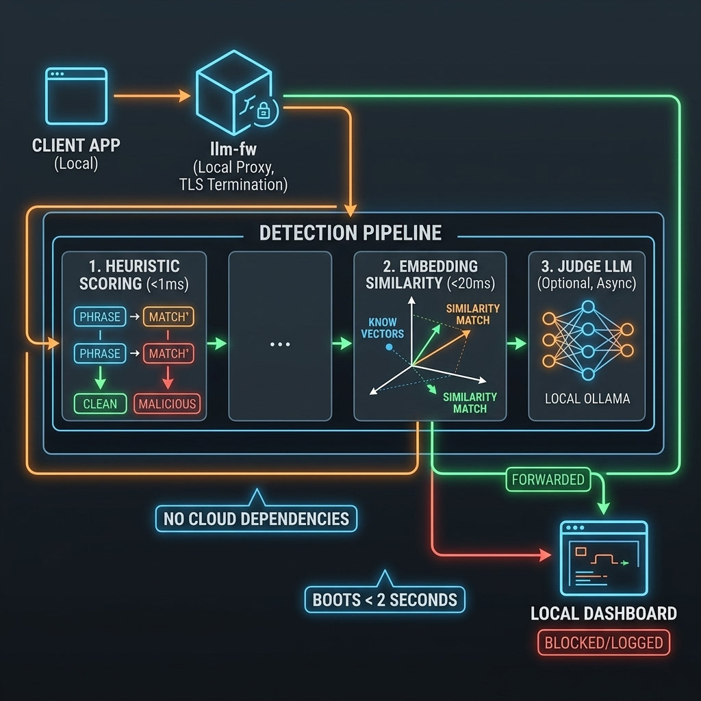

local prompt injection firewall
Stop prompt injection
before it leaves your machine.
llm-fw intercepts, inspects and blocks LLM requests on your own machine. Nothing leaves it, and clean traffic is not slowed down.
- Free for noncommercial use
- No cloud calls, no telemetry
- Node.js 22+ · Windows, macOS, Linux
- Commercial licence for company use

Full methodology and held-out numbers: Detection Scorecard · Generalization Benchmark
Covers every major provider out of the box: OpenAI, Anthropic, Google Gemini and Vertex, Azure OpenAI, AWS Bedrock, Mistral, Groq, DeepSeek, Cohere, xAI, Perplexity, OpenRouter, Together, Fireworks, Anyscale and Hugging Face.
dashboard
Watch what it blocks
Every intercepted request lands in a dashboard on localhost:7731, with the stage that caught it, the score, and the decoded payload.
Events feed: intercepted requests appear as they happen, tagged with the stage that caught them (heuristic, embedding, dos, rag or dlp) and their score.
how it fits in
A proxy your tools already know how to use
Point HTTPS_PROXY at 127.0.0.1:8080 and every SDK, CLI and agent that respects it is covered. No SDK wrapper, no code change.
- Local certificate authority. Setup generates a root CA and registers it in your OS trust store, so TLS can be terminated and inspected locally.
- OS-level sinkhole. For Node.js and native binaries that ignore proxy variables, a hosts entry plus a
:443port redirect brings them in anyway. - No cloud dependency. No API keys, no accounts, no telemetry. Detection models run on your CPU and the event log stays on disk.

three-stage defense
Cheap checks first, expensive ones only when needed
A prompt falls through three stages. Most traffic never reaches stage two.
Heuristic scoring
Weighted phrase matching over a normalisation pass built to survive evasion: spacing, case, homoglyphs and leetspeak, plus decoding of base64, base32, hex, binary, morse, ROT13, URL-encoding and reversed text back to plaintext.
Cross-lingual embeddings
Cosine similarity against canonical injection-intent anchors using a local multilingual-e5-small ONNX model. Because the encoder aligns around 100 languages, an injection written in Urdu or Thai lands near the English anchors with no rule written for it.
Local LLM judge
A local Ollama model, qwen2.5:3b by default, reasons about intent on the prompts the cheap stages are unsure about. An opt-in ONNX classifier can take that role instead, with no Ollama required.
beyond injection
Injection is not the only thing worth stopping
Outbound secret scanning
52 named credential patterns, covering AWS, GitHub, GitLab, Stripe, Slack, npm, PyPI, Vault, database URIs, private keys and the API keys of every LLM provider, plus Luhn-validated card numbers and US social security numbers. Matches are redacted before the request leaves.
Cost and loop circuit breaker
Behavioural rate limiting on tokens and requests, and a breaker for the failure mode that empties a budget overnight: an agent stuck in a loop, resending near-identical payloads until someone notices the bill.
Untrusted content, judged separately
Instructions hidden in retrieved documents, tool results and code fences are scanned as data, not as user intent, and you can set a tighter threshold there than on the prompt surface. Invisible-Unicode smuggling and text rendered into pasted screenshots are decoded and scanned too.
licensing
Free for noncommercial use, paid for company use
llm-fw is not open source. The same package does both jobs; what you buy is the right to use it commercially.
Noncommercial
Free
No key, no signup, no telemetry.
- Personal projects, hobby work and private study
- Research and teaching
- Charities, schools, public research bodies and government
- Every feature, nothing held back behind the paid tier
Commercial
From €450/ year
Priced by team size. One licence covers everyone.
- Company machines, CI, and
--standaloneas a shared team proxy - No per-seat keys and no seat counting
- Priority support and an invoice if you need one
- Cancel any time; the licence runs to the end of the term
Which one applies to you. The PolyForm Noncommercial License 1.0.0 does not grant commercial use. If llm-fw runs anywhere in a for-profit organisation's work you need a commercial licence, including on a single developer's laptop, in CI, and on a shared standalone server. Embedding or redistributing llm-fw inside a product you sell needs an OEM agreement rather than a standard licence.
Commercial tiers
The developer count is the number of developers whose traffic llm-fw inspects. Billed yearly.
| Developers | Price per year | |
|---|---|---|
| 1 to 9 | €450 | |
| 10 to 49 | €1,500 | |
| 50 to 199 | €4,000 | |
| 200+ | €9,000 | |
| OEM / redistribution | from €15,000, negotiated |
Checkout is handled by Paddle, our merchant of record, which acts as the seller of record and handles VAT and sales tax. PayPal and card are both accepted at checkout. Prices exclude tax; it is added at checkout, and shown in your local currency where Paddle supports it. Your licence key is sent by email after purchase. It is issued by hand, so please allow one business day.
Prefer an invoice or a purchase order, or want to talk first? Email us. Read the terms and the refund policy.
quick installation
Three commands
setup generates the local CA and registers it in your trust store; the
sinkhole step needs administrator rights, and --proxy-only skips it.
Node.js 22 or newer. Windows, macOS and Linux.
npm install -g llm-fw
llm-fw setup
llm-fw startfaq
Questions
Do my prompts or code get uploaded anywhere?
No. Heuristics, the ONNX embedding model, the optional judge and the event database all run locally. llm-fw makes no cloud calls of its own and sends no telemetry. The only traffic that leaves is the traffic you were already sending to your LLM provider.
Does inspection slow down my requests?
The streaming heuristic pass completes in under a millisecond, and clean traffic is forwarded as it streams rather than buffered and re-sent. The embedding stage adds under 20ms once warm, and only runs when the cheap stage is unsure. The optional LLM judge is the slow one, which is why it is opt-in and reserved for the ambiguous middle.
How does it read encrypted traffic?
llm-fw setup generates a root certificate authority on your machine and registers it in the OS trust store, which lets the proxy terminate TLS locally, inspect the request, and re-establish it upstream. The CA private key never leaves the machine. llm-fw uninstall removes it from the trust store again.
What happens if it blocks something it shouldn't?
The blocked request appears in the dashboard with the rule that matched and the score it got. Marking it a false positive records it; on a blocked prompt you can also suppress future matches, which downgrades an identical prompt to a warning instead of a block. Thresholds are configurable per surface, so you can run tighter on tool output than on typed prompts.
I work at a company. Can I use the free licence?
Not if the work is commercial. PolyForm Noncommercial covers personal projects, study, research, teaching, charities, schools, public research bodies and government institutions. Running llm-fw as part of a for-profit company's work is commercial use, even on one laptop, even in CI, and needs a commercial licence. Evaluating it before you buy is fine; email us if you want longer than a couple of weeks.
Is anything different in the paid version?
No. It is the same software from the same npm package, with every feature available either way. What you buy is the right to use it commercially, plus priority support. Nothing is crippled to sell an upgrade, and there is no phone-home check.
Put a firewall between your tools and the model
Three commands on your own machine. Free for noncommercial use; one licence covers a whole company.